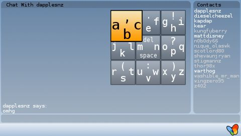
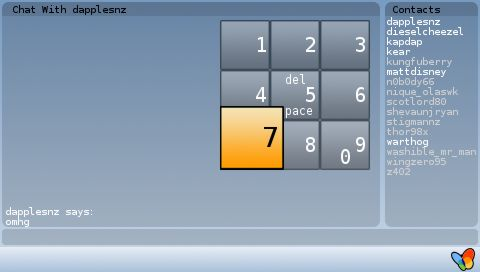

Heres an update for everyone on the current afkim progress.
The current todo list for the next version is looking fairly big, but there is alot of good things in there to wait for 🙂
I’ve been working on a new keyboard, there is a test version of it you can try Here
Raw images of OSK are available Here (gimp format) if you want to change the gfx.
 
And as you’ve seen on the AFKIM splash screen, AFKIM was entered in the Neo-Flash Competition, you can vote for AFKIM here:
http://www.neoflash.com/forum/index.php/topic,1941.45.html
I’ve also fixed the paypal link, it had the wrong email address (woops!). Feel free to sling something my way 😉
Is this usable because i am not able to select conncetion or anything
o wait , i see its only test, but i like this waaaaaay better then the old way. keep up the good work
This is way better that the other imput method i couldnt even use this because my password was too complex with numbers a letters in caps
Well I like this one alot it’s much better then the previous one! The letters are much faster to find this way. Keep up the good work;)
wow that so great th
VERY nice. I REALLY hope to see this implimented soon. It’s very unique and easy to use.
Thats really great and much better then the old keyboard hope will be in next release too because i wasn’t able to use the old keypad of afkim :-(.
sry for my english
When will it be available? it is great, lot better than psprint! release it, i’m going to leave soon and i need msn 😛
i’m using the new AFKIM with the new keyboard but i’m still having problems connecting. do i have to modify the bitlbee.cfg file before i can connect properly? i used automatic config on my network settings and no WEP (to make sure that there will be no conflicts with the connection).
how do u use numbers on da old keyboard